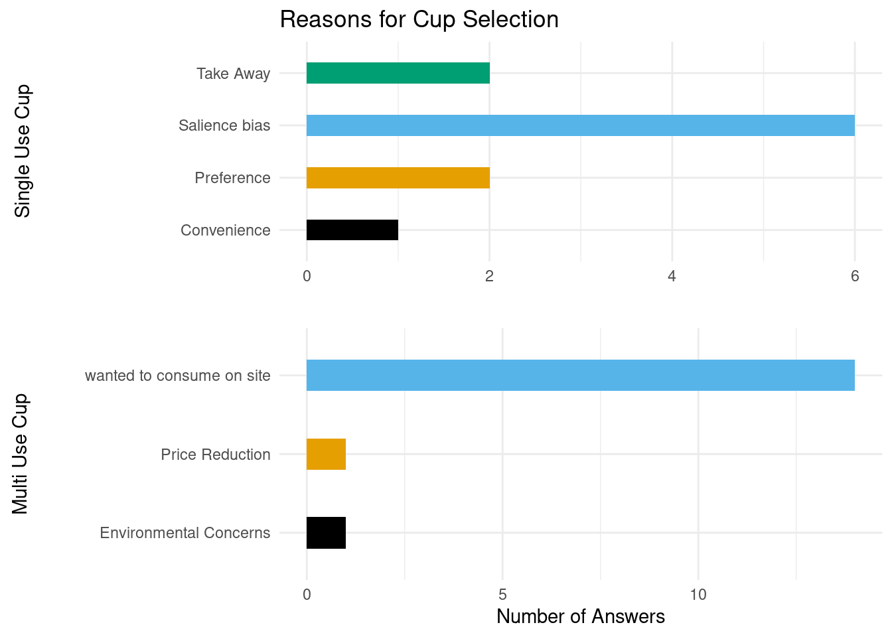
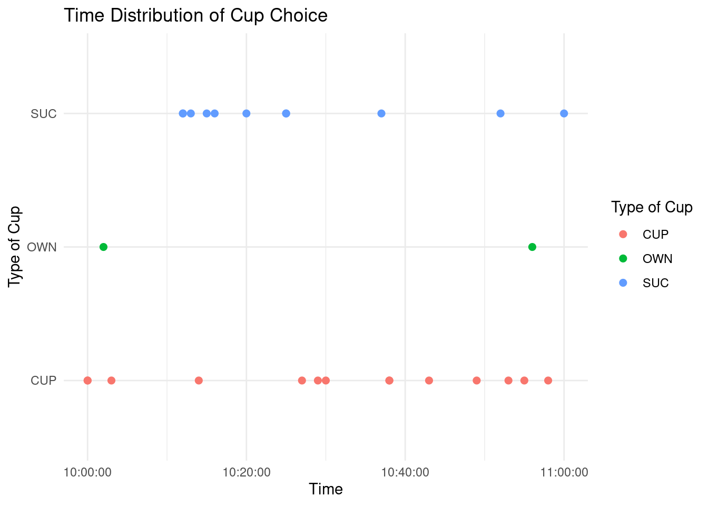

suppressPackageStartupMessages({
library(tidyverse)})
library(dplyr)
library(tidyverse)
library(ggplot2)
library(ggthemes)
library(conflicted)
library(cowplot)
library(knitr)
library(kableExtra)
#Data used in index_file -> idataSustainable Sips: Analyzing Factors Influencing Cup Selection at ETH Zurich
Capstone Project
Abstract
This study analyzes the factors influencing cup choice among participants at ETH Zurich, revealing key demographic and behavioral patterns in sustainable consumption.
Import Data and Libraries
Introduction
Disposable cups seem unavoidable these days. Almost every cafeteria, shop, and restaurant offers some kind of disposable cup solution to meet the on-the-go demand of customers. Nearly half a trillion disposable cups are produced every year—that’s over 70 cups per person annually—making it a $20 billion industry and still growing. To put it in perspective: every second coffee or hot drink is sold in a disposable cup.
Although there are many materials used, paper and Styrofoam are the most common. Styrofoam cups, mainly used in the US, are popular because they insulate well, keeping drinks hot for longer. However, they are nearly impossible to recycle and usually end up in landfills. The US alone throws away about 25 billion of these cups each year—roughly 82 per person @earthactionnorthdevondisposable.
At first glance, paper cups might seem like the more reasonable alternative. But they also have their downsides. They are mostly made from virgin pulp, as recycled paper is rarely used due to health concerns. About 70% of global paper production comes from diminishing forests. And because paper alone isn’t waterproof, paper cups are coated with a thin plastic lining, which makes them very difficult to recycle. As a result, only about 0.25% of paper cups are ever recycled. The rest ends up in landfills, incineration plants, or as litter in the environment.
This study seeks to explore the reasons behind the preference for single-use cups despite the availability of alternatives.
Methods
This research is based on an observational study conducted at the Cafeteria Einstein at ETH Zürich. On May 22nd, between 10:00 AM and 11:00 AM, the choice of coffee cup at the self-service machine was documented. Afterward, the reasoning behind each choice and demographic information were collected for analysis. To avoid influencing the results, I remained out of sight from the coffee machine and approached individuals only after they had completed their purchase. Since my hypothesis assumes that weather significantly impacts cup choice, it is worth noting that it was a rainy day. As a result, drinking coffee outside was not a viable option.
Results
Firstly when looking at the plain distribution of the choice of mug seen in Figure 1 we confirm the observation mentioned in the introduction. 42% of the customers chose the Single Use Cup and 58% some sort of Reusable Cup.
idata.dis <- read_csv("../data/final/data_cups_distribution.csv",show_col_types = FALSE)
# Basic pie chart with percentage labels
ggplot(idata.dis, aes(x = "", y = n, fill = cup_label)) +
geom_bar(stat = "identity", width = 1) +
coord_polar("y") +
geom_text(
aes(label = paste0(percentage, "%")),
position = position_stack(vjust = 0.5)) +
theme_void() +
labs(
title = "Choice of Cup by the Customers at ETH Cafeteria Einstein",
fill = "Type of Cup"
) +
scale_fill_manual(
values = c(
"Cafeteria Mug" = "lightgreen",
"Own Cup" = "darkgreen",
"Single-Use Cup" = "grey")) Especially considering that Zweistein isn’t a typical Take Away location and the weather didn’t allow for outdoor consumption, this is higher than initially assumed.
idata_suc_reason <- read_csv("../data/final/data_cup_suc_reason.csv",show_col_types = FALSE)
idata_muc_reason <- read_csv("../data/final/data_cup_muc_reason.csv",show_col_types = FALSE)
# Bar plot of answer counts
isucplot <- ggplot(idata_suc_reason,
aes(x = n,
y = suc_reason,
fill = suc_reason)) +
geom_bar(stat = "identity",
show.legend = FALSE, width = 0.4) +
labs(
title = "Reason for choosing cup",
y = "Single Use Cup",
x = ""
) +
scale_fill_colorblind() +
theme_minimal() +
theme(
axis.title.y = element_text(
margin = margin(r = 82),
vjust = 0.5,
hjust = 0.5
)
)
imucplot <- ggplot(idata_muc_reason,
aes(x = n,
y = muc_reason,
fill = muc_reason)) +
geom_bar(stat = "identity",
show.legend = FALSE, width = 0.4) +
labs(
y = "Multi Use Cup",
x = "Number of Answers (Single Choice)"
) +
scale_fill_colorblind() +
theme_minimal() +
theme(
axis.title.y = element_text(
margin = margin(r = 30),
vjust = 0.5,
hjust = 0.5))
library(gridExtra)
plot_grid(isucplot, imucplot, ncol = 1, align = "v", axis = "lr")

When we compare the reasoning behind the choice, as seen in fig Figure 2 we some clear tendency in both choices. Interestingly, most participants in this study mentioned that they chose the single-use paper cup simply because it was the first thing they saw next to the machine—making it a logical and convenient choice. This salience bias is evident in the setup (see image below): the cafeteria mugs are stored in a heating cabinet, making them less visible and accessible, while the single-use cups are prominently displayed right next to the coffee machine.
Unsurprisingly, the second most common reason given was the desire to take the drink away, followed by general preference. However, upon further questioning, this preference was closely tied to convenience. Many participants expressed that they preferred using a single-use cup—even when consuming the drink on-site—because it left the option open to take the drink with them later. In other words, the perceived convenience of future flexibility influenced their immediate choice.
idata_time <- read_csv("../data/final/data_cup_time.csv",show_col_types = FALSE)
ggplot(idata_time, aes(x = time_hm,
y = cup,
color = cup)) +
geom_point(size = 2) +
theme_minimal() +
labs(
title = "Time Distribution of Cup Choice",
x = "Time",
y ="Type of Cup",
) + scale_fill_discrete(labels = c("Cafeteria Mug",
"Own Mug",
"Single Use Paper Cup"))

An analysis of the time distribution of coffee cup choices reveals a noticeable clustering of single-use cup selections around the typical break period (10:00–10:15). In contrast, the use of conventional cafeteria mugs remains relatively stable throughout the measured interval. Although the data is not sufficient to draw definitive conclusions, this observed trend in single-use cup usage may reflect the preference for take-away convenience discussed earlier.
When considering age range in cup choice reasoning, a further pattern emerges: the previously mentioned salience bias appears to be particularly strong among older participants. Compared to the average age of those who consumed their beverages on-site using reusable cups, those who opted for single-use cups were, on average, more than ten years older. Table Table 1 provides a summary of the study, including participants’ age ranges, and their reasoning for cup choice.
idata_table <- read_csv("../data/final/data_table.csv",show_col_types = FALSE)
kable(idata_table, caption = "Summary of Reasons and Cup choice combined with the age of the participant") | Type of Cup | Reason SUC | Reason MUC | Amount | Average age |
|---|---|---|---|---|
| CUP | - | wanted to consume on site | 14 | 24.3 |
| OWN | - | Price Reduction | 1 | 28.0 |
| OWN | - | Environmental Concerns | 1 | 42.0 |
| SUC | Take Away | - | 2 | 32.0 |
| SUC | Preference | - | 2 | 31.5 |
| SUC | Convenience | - | 1 | 24.0 |
| SUC | Salience bias | - | 6 | 39.3 |
Conclusions
Salience Bias:
Most participants chose the single-use paper cup due to its visibility and accessibility, highlighting a clear salience bias. Cafeteria mugs, stored out of sight in a heating cabinet, were chosen less often. This bias was especially pronounced among older participants, suggesting a link between age and sensitivity to visual cues.
Convenience:
Participants often preferred single-use cups not just for immediate use, but for the flexibility to take the drink with them later—suggesting future convenience shapes present preferences.University Break Times:
Single-use cups showed a usage spike during the standard break time (10:00–10:15), possibly reflecting the convenience of takeaway during short breaks, whereas mug usage remained stable throughout the day